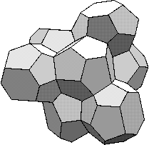

There are 2 reviews in this issue:
Book Review (1) : Synchrotron Radiation
Title: Synchrotron Radiation: Production and Properties.
Author: P. J. Duke
Publisher: Oxford University Press, 2 March 2000
Series: Oxford Series on Synchrotron Radiation. no. 3
ISBN 0-19-851758-0 hardback £70 251 pages
Synchrotron radiation is now an international commodity widely available to
scientists in a huge range of disciplines. Crystallography has benefited
from this new source of X-rays as much as any field, but crystallographers
are often guilty of regarding their synchrotron source as a magic black box
without enquiring too closely what makes it tick. Phil Duke's book, based
on an M.Sc module on "X-ray science and technology" given at King's College
London, provides a guide to how synchrotron radiation arises and how its
unusual properties can be harnessed. The author builds on 40 years of
accelerator experience at Brookhaven, at CERN and at the Daresbury
laboratory, where the first electron synchrotron dedicated to the production
of synchrotron radiation began operation in 1981.
Introductory chapters on waves, electromagnetism and special relativity
precede an account of radiation for moving electrons. In principle the
description is wholly self contained, but one must be quite adept at vector
calculus to follow the development of the equations which provide the key to
understanding why accelerator induced radiation is so useful. A detailed
account of synchrotron radiation from dipole magnets then leads on to
discussions of spectral distribution as a function of energy and angle.
Several chapters on various aspects of electron storage rings follow.
Finally the fundamentals of wiggles and undulation are discussed prior to an
epilogue on recent developments and future prospects.
The emphasis of the book in on synchrotron fundamentals, which have been
understood for a considerable time. As a result there are few recent
references in the bibliography, apart from in the relatively short chapters
on insertion devices and the look to the future. However, the collection of
ideas from various traditional sources and their transformation in to a
sustained and coherent account of the field is manifestly useful. Should
crystallographers grapple with this text? For those involved in designing
new beamlines for crystal structure analysis there is a wealth of important
results that underpin their trade, but the average crystallographic
practitioner will find the going quite hard. Summaries at the end of
chapters emphasising the implications of the key mathematical results would
have been helpful here.
At £70 for 251 pages this volume is destined largely for specialist libraries rather than on personal bookshelves where it deserves to have influence both as an advanced teaching text and as a valuable source of reference material.
Jim Matthew
University of
York
Book Review (2) : The Pursuit of Perfect Packing
Title: The Pursuit of Perfect Packing
Authors: Tomaso Aste and Denis Weaire
Publisher: IOP Publishing Ltd, 2000 136 pages including a 3 page index
ISBN 0-7503-0648-3 paperback £17.50 ISBN 0-7503-0647-5 hardback £45
This slim volume has a roughly chronological approach to the problem of trying to pack objects into the smallest possible space; intended for the general reader it could be a help to school teachers covering the topic of 'Shape and Space' in the National Curriculum. Many different fields of packing are covered, ranging from casks of beer to honeycombs, buckyballs and cars. Denis Weaire is a professor of Physics in Trinity College, Dublin so the beer is Guinness, shown stacked in rows six casks high with several workman perched precariously on the top busy stacking a seventh layer. More sober stacking problems in crystallography are discussed in later chapters, but there is little help for a curious school child who may want to calculate the surface area and volume of a polyhedron. A brief bibliography would have been helpful, and a few references to micro-computer polyhedron drawing programs. Original references are given as footnotes on the relevant page so you can consult them if you have access to a suitable library.
The authors start in two dimensions by considering every day objects, for example the 'loose change in your pocket', and how they can be packed together. Regular and semi-regular packing are illustrated as well as disordered, quasi-ordered and fractal packings. Anecdotes of historical figures abound to enliven the text. After a section discussing Kepler's conjecture, nicely illustrated with a reproduction of a page from Kepler's original work, there is a section on his unhappy personal life; apparently he carefully analysed the merits of 16 girls - before choosing the wrong one for his second wife. As the authors say "The word 'nerd' may be inappropriate for a giant of the Renaissance, but it springs to mind". Thomas Hales is credited with proving Kepler's conjecture in August 1998, some of his emails on the subject are reproduced together with a list of relevant papers. Naturally you can read all about it on the Internet; look at http://www.math.lsa.umich.edu/~hales.
Other packings considered are biological cells, lead shot and soap bubbles. These very different systems all pack most closely into similar polyhedral shapes, so they must all conform to the inescapable geometrical condition of filling space. Chapter 7 'Toils and troubles with bubbles' gives more anecdotes, this time about Lord Kelvin who was fascinated by soap films and packing, derived a 'Kelvin cell', a polyhedron which gives the densest packing and made a model known irreverently in the University of Glasgow as 'Kelvin's Bedspring'. Does anyone know if it is still there in some museum?

The Weaire-Phelan structure shown in the diagram was found in 1993; it is
thought to occur in structures with tetrahedral bonds and has a surface area
0.3% less than the Kelvin cell.
This book is very good value for money, especially for Institute of Physics
members who get a discount on all IOP Publishing products. I found it
fascinating and can thoroughly recommend it as a suitable Christmas gift for
a crystallographer. The anecdotes and diagrams could usefully be used by
teachers trying to keep the interest of their pupils in introductory
classes.
Kate Crennell
December 2000
Page last updated 10 December 2001
 Click here to return to BCA homepage
Click here to return to BCA homepage